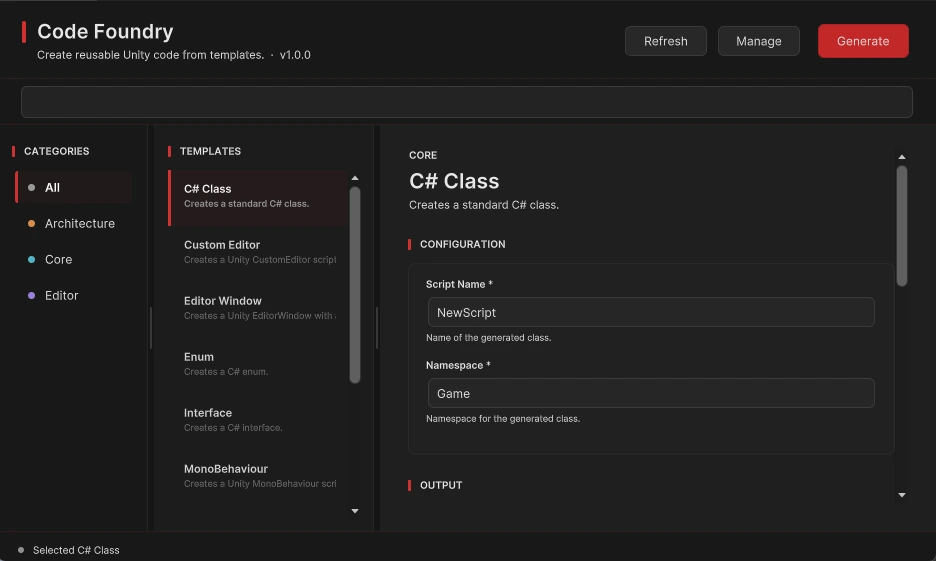

From template
to script.
A practical guide to your first generation and your own reusable templates.
Installation & compatibility
Import the Code Foundry package into your Unity project and allow Unity to finish importing and compiling. Open Tools › ROAR DEV TOOLS › Code Foundry.
Verified in Unity 2022.3 LTS and developed in Unity 6000.0.74f1. Code Foundry is an Editor tool; its generation workflow is separate from your game's rendering.
Your first script
- Choose a template.
Select a category and template, such as MonoBehaviour.
- Configure the variables.
Enter a valid script name, such as PlayerController, and a namespace, such as Game.Player. Complete any other required fields.
- Set the output location.
Choose a folder inside your project's Assets directory. Enable folder creation if needed.
- Review the live preview.
Check the generated code before writing a file. Copy the preview if you want to use it separately.
- Generate.
Click Generate in the header. Unity imports the new script. You can select or open the generated script using the output options.
Find, configure, preview
The search field and category list narrow your template catalog. Selecting a template populates its configuration fields and code preview.
Drag the dividers to resize the three panels. Use Refresh after changing template files outside the tool. Use Manage to open your template library.

Create a reusable template
- Open Manage.
Click New to create a template, or select an existing template and click Duplicate.
- Define the template.
Set its ID, display name, category, description, filename pattern, and variables.
- Write the template content.
Insert variables using double-brace tokens such as
{{SCRIPT_NAME}}and{{NAMESPACE}}. Declare the variables your content uses. - Save and use it.
Resolve validation messages, save the template, and refresh the main window if needed.
Where templates live
The default user-template folder is Assets/CodeFoundryUserTemplates. Use Change Folder in the manager to select another supported folder. Keep your user templates separate from the package and include them in your project's version control.
Editing and deletion
Select a user template in Manage to edit, duplicate, or delete it. Keep a backup before deleting a template you may need again.
Troubleshooting
Why can't I generate a script?
Complete required variables, use a valid C# name and namespace, and choose an output location inside Assets. Read the field validation and status messages.
A file with this name already exists.
Choose another script name or output folder. The generator protects existing files rather than silently replacing them.
My new template isn't listed.
Click Refresh. Confirm your user-template folder and check the template's metadata and content for validation errors.
How do I report a problem?
Email roardevtools@gmail.com with the tool version, exact Unity version, steps to reproduce, and relevant screenshots or Console messages.